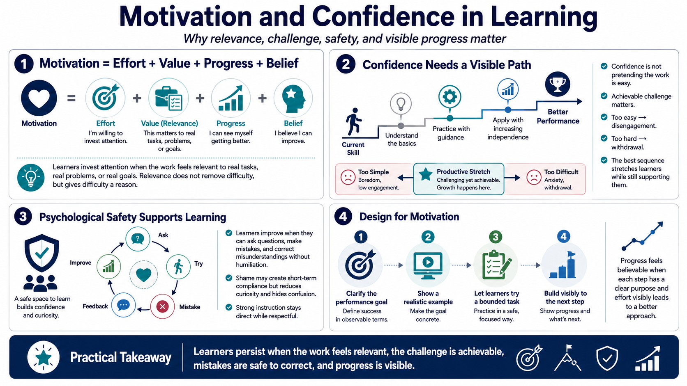

Motivation, Relevance, and Confidence
Connecting to LMS... Progress: in progress

Narration
Motivation is not just enthusiasm. In a learning environment, motivation often comes from the connection between effort, value, progress, and the belief that improvement is possible. Learners are more willing to invest attention when they can see how the material connects to real tasks, real problems, or real goals. Relevance does not remove difficulty, but it gives the difficulty a reason.
Confidence also matters, especially when learners are being asked to try something unfamiliar. Confidence does not mean pretending the work is easy. It means learners can see a path from where they are now to better performance. Achievable challenge helps. If the task is too simple, learners disengage. If it is far beyond reach, they may stop trying. A useful learning sequence gives enough stretch to build skill while still providing support.
Psychological safety is important in many learning settings because people learn more honestly when they can ask questions, make mistakes, and correct their understanding without humiliation. Shame-based training can produce compliance in the moment, but it often reduces curiosity and hides confusion. Strong instruction is direct about expectations while still respecting the learner. It supports persistence by making progress visible and by treating mistakes as information that can guide the next attempt.
Designers can support motivation by making the path visible. Tell learners what they are trying to become able to do, show a realistic example, let them try a bounded version, and then show how the next activity builds on the last one. Progress feels more believable when learners can see that each step has a purpose and that effort is producing a clearer approach.